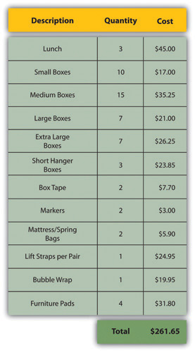
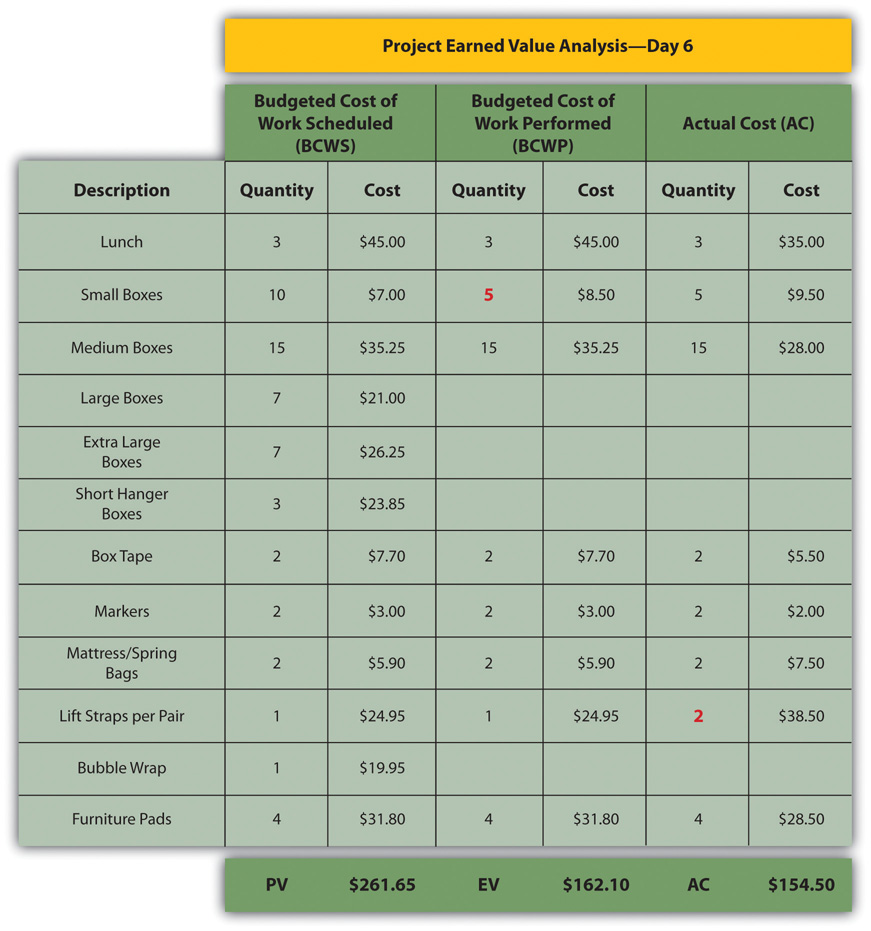
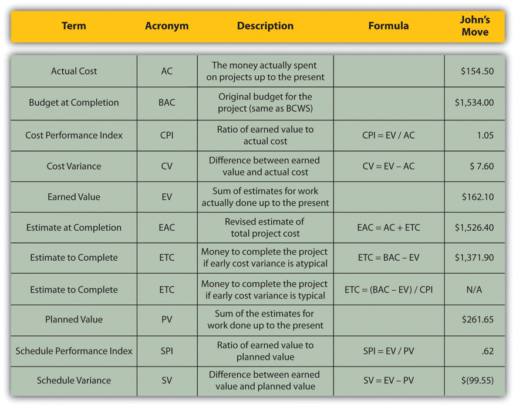

Projects seldom go according to plan in every detail. It is necessary for the project manager to be able to identify when costs are varying from the budget and to manage those variations.
If the total amount spent on a project is equal to or less than the amount budgeted, the project can still be in trouble if the funding for the project is not available when it is needed. There is a natural tension between the financial people in an organization, who do not want to pay for the use of money that is just sitting in a checking account, and the project manager, who wants to be sure that there is enough money available to pay for project expenses. The financial people prefer to keep the company’s money working in other investments until the last moment before transferring it to the project account. The contractors and vendors have similar concerns, and they want to get paid as soon as possible so they can put the money to work in their own organizations. The project manager would like to have as much cash available as possible to use if activities exceed budget expectations.
Most projects have something unexpected occur that increases costs above the original estimates. If estimates are rarely exceeded, the estimating method should be reviewed because the estimates are too high. It is not possible to predict which activities cost more than expected, but it is reasonable to assume that some of them will be. Estimating the likelihood of such events is part of risk analysis, which is discussed in more detail in a later chapter.
Instead of overestimating each cost, money is budgeted for dealing with unplanned but statistically predictable cost increases. Funds allocated for this purpose are called contingency reservesMoney held to pay for predictable but unspecified extra costs..Project Management Institute, Inc., A Guide to the Project Management Body of Knowledge (PMBOK Guide), 4th ed. (Newtown Square, PA: Project Management Institute, Inc., 2008), 173. Because it is likely that this money will be spent, it is part of the total budget for the project. If this fund is adequate to meet the unplanned expenses, then the project will complete within the budget.
If something occurs during the project that requires a change in the project scope, money may be needed to deal with the situation before a change in scope can be negotiated with the project sponsor or client. It could be an opportunity as well as a challenge. Money can be made available to the project to be used at the discretion of the manager to meet needs that would change the scope of the project. These funds are called management reservesMoney that is available for changing the scope of the project.. Unlike contingency reserves, they are not likely to be spent and are not part of the project’s budget baseline, but they can be included in the total project budget.Project Management Institute, Inc., A Guide to the Project Management Body of Knowledge (PMBOK Guide), 4th ed. (Newtown Square, PA: Project Management Institute, Inc., 2008), 177.
A project manager must regularly compare the amount of money spent with the budgeted amount and report this information to managers and stakeholders. It is necessary to establish an understanding of how this progress will be measured and reported.
In the John’s move example, he estimated that the move would cost about $1,500 and take about sixteen days. Eight days into the project, John has spent $300. John tells his friends that the project is going well because he is halfway through the project but has only spent a fifth of his budget. John’s friend Carlita points out that his report is not sufficient because he did not compare the amount spent to the budgeted amount for the activities that should be done by the eighth day.
As John’s friend points out, a budget report must compare the amount spent with the amount that is expected to be spent by that point in the project. Basic measures such as percentage of activities completed, percentage of measurement units completed, and percentage of budget spent are adequate for less complex projects, but more sophisticated techniques are used for projects with higher complexity.
A method that is widely used for medium- and high-complexity projects is the earned value management (EVM)Method of comparing the budgeted and actual costs of a project during the project. method. EVM is a method of comparing the budgeted and actual costs of a project periodically during the project. It combines the scheduled activities with detailed cost estimates of each activity. It allows for partial completion of an activity if some of the detailed costs associated with the activity have been paid but others have not. The earned value analysis method compares the anticipated cost of work that is scheduled to be done at a given point in time against what has been done and how much it actually cost.
The budgeted cost of work scheduled (BCWS)All the items in the cost estimate. See budget at completion (BAC). comprises the detailed cost estimates for each activity in the project. The amount of work that should have been done by a particular date is the planned value (PV)Sum of the items in the budgeted cost of work scheduled that should have been spent by a particular day.. These terms are used interchangeably by some sources, but the planned value term is used in formulas to refer to the sum of the budgeted cost of work up to a particular point in the project, so we will make that distinction in the definitions in this text for clarity.
On day six of the project, John should have taken his friends to lunch and purchased the packing materials. The portion of the BCWS that should have been done by that date (the planned value) is listed in Figure 9.6 "Planned Value for Lunch and Packing Materials". This is the planned value for day six of the project.
Figure 9.6 Planned Value for Lunch and Packing Materials
The budgeted cost of work performed (BCWP)The budgeted cost of work scheduled that has been done. is the budgeted cost of work scheduled that has been done. If you sum the BCWP values up to that point in the project schedule, you have the earned value (EV)Sum of budgeted expenses up to a particular point in the schedule..
The amount spent on an item is often more or less than the estimated amount that was budgeted for that item. The actual cost (AC)Sum of money spent so far. is the sum of the amounts actually spent on the items.
Dion and Carlita were both trying to lose weight and just wanted a nice salad. Consequently, the lunch cost less than expected. John makes a stop at a store that sells moving supplies at discount rates. They do not have all the items he needs, but the prices are lower than those quoted by the moving company. They have a very good price on lifting straps so he decides to buy an extra pair. He returns with some of the items on his list, but this phase of the job is not complete by the end of day six. John bought half of the small boxes, all of five other items, twice as many lifting straps, and none of four other items. John is only six days into his project, and his costs and performance are starting to vary from the plan. Earned value analysis gives us a method for reporting that progress. Refer to the figure below.
Figure 9.7 Planned Value, Earned Value, and Actual Cost
The original schedule called for spending $261.65 (PV) by day six. The amount of work done was worth $162.10 (EV) according to the estimates, but the actual cost was only $154.50 (AC).
The project manager must know if the project is on schedule and within the budget. The difference between planned and actual progress is the varianceDifference between estimated and actual.. The schedule variance (SV)Difference between the earned value (EV) and the planned value (PV). is the difference between the earned value (EV) and the planned value (PV). Expressed as a formula, SV = EV − PV. If less value has been earned than was planned, the schedule variance is negative, which means the project is behind schedule.
Planning for John’s move calls for spending $261.65 by day six, which is the planned value (PV). The difference between the planned value and the earned value is the scheduled variance (SV). The formula is SV = EV − PV. In this example, SV = $162.10 − $261.65 = $(99.55) A negative SV indicates the project is behind schedule.
The difference between the earned value (EV) and the actual cost (AC) is the cost variance (CV)Earned value minus actual cost.. Expressed as a formula, CV = EV − AC
The difference between the earned value of $162.10 and the actual cost of $154.50 is the cost variance (CV). The formula is CV = EV − AC. In this example, CV = $162.10 − $154.50 = $7.60.
A positive CV indicates the project is under budget.
The schedule variance and the cost variance provide the amount by which the spending is behind (or ahead of) schedule and the amount by which a project is exceeding (or less than) its budget. They do not give an idea of how these amounts compare with the total budget.
The ratio of earned value to planned value gives an indication of how much of the project is completed. This ratio is the schedule performance index (SPI)Ratio of earned value (EV) to planned value (PV).. The formula is SPI = EV/PV. In the John’s move example, the SPI equals 0.62 (SPI = $162.10/$261.65 = 0.62) A SPI value less than one indicates the project is behind schedule.
The ratio of the earned value to the actual cost is the cost performance index (CPI)Ratio of earned value (EV) to actual cost (AC).. The formula is CPI = EV/AC.
In the John’s move example, CPI = $162.10/$154.50 = 1.05 A value greater than 1 indicates the project is under budget.
Figure 9.8 Schedule Variance and Cost Variance on Day Six of the John’s Move Project

The cost variance of positive $7.60 and the CPI value of 1.05 tell John that he is getting more value for his money than planned for the tasks scheduled by day six. The schedule variance (SV) of negative $99.55 and the schedule performance index (SPI) of 0.62 tell him that he is behind schedule in adding value to the project.
During the project, the manager can evaluate the schedule using the schedule variance (SV) and the schedule performance index (SPI) and the budget using the cost variance (CV) and the cost performance index (CPI).
Partway through the project, the manager evaluates the accuracy of the cost estimates for the activities that have taken place and uses that experience to predict how much money it will take to complete the unfinished activities of the project—the estimate to complete (ETC)Estimate of the amount of money needed to complete the unfinished part of the project..
To calculate the ETC, the manager must decide if the cost variance observed in the estimates to that point are representative of the future. For example, if unusually bad weather causes increased cost during the first part of the project, it is not likely to have the same effect on the rest of the project. If the manager decides that the cost variance up to this point in the project is atypicalOpposite of typical—not typical.—not typical—then the estimate to complete is the difference between the original budget for the entire project—the budget at completion (BAC)Budget for the entire project.—and the earned value (EV) up to that point. Expressed as a formula, ETC = BAC − EV
In John’s move, John was able to buy most of the items at a discount house that did not have a complete inventory and, he chose to buy an extra pair of lift straps. He knows that the planned values for packing materials were obtained from the price list at the moving company where he will have to buy the rest of the items, so those two factors are not likely to be typical of the remaining purchases. The reduced cost of lunch is unrelated to the future costs of packing materials, truck rentals, and hotel fees. John decides that the factors that caused the variances are atypical. He calculates that the estimate to complete (ETC) is the budget at completion ($1,534) minus the earned value at that point ($162.10), which equals $1,371.90. Expressed as a formula, ETC = $1,534 − $162.10 = $1,371.90.
If the manager decides that the cost variance is caused by factors that will affect the remaining activities, such as higher labor and material costs, then the estimate to complete (ETC) needs to be adjusted by dividing it by the cost performance index (CPI). For example, if labor costs on the first part of a project are estimated at $80,000 (EV) and they actually cost $85,000 (AC), the cost variance will be 0.94. (Recall that the cost variance = EV - AC).
To calculate the estimate to complete (ETC) assuming the cost variance on known activities is typical of future cost, the formula is ETC = (BAC – EV)/CPI. If the budget at completion (BAC) of the project is $800,000, the estimate to complete is ($800,000 – $80,000)/0.94 = $766,000.
If the costs of the activities up to the present vary from the original estimates, it will affect the total estimate for the project cost. The new estimate of the project cost is the estimate at completion (EAC)Revised project budget based on actual cost to date plus the estimate to complete (ETC).. To calculate the EAC, the estimate to complete (ETC) is added to the actual cost (AC) of the activities already performed. Expressed as a formula, EAC = AC + ETC.
The revised estimate at completion (EAC) for John’s move at this point in the process is EAC = $154.50 + $1,371.90 = $1,526.40.
Refer to Figure 9.9 "Summary of Terms and Formulas for Earned Value Analysis" for a summary of terms and formulas.
Figure 9.9 Summary of Terms and Formulas for Earned Value Analysis
Estimating Earned Value
Consider a project you are familiar with in which the contractor or service provider who was performing the work needed to be replaced before the job was completed. Describe how the value of the contractor’s efforts up to that point was determined and how that evaluation compared to an earned value analysis.